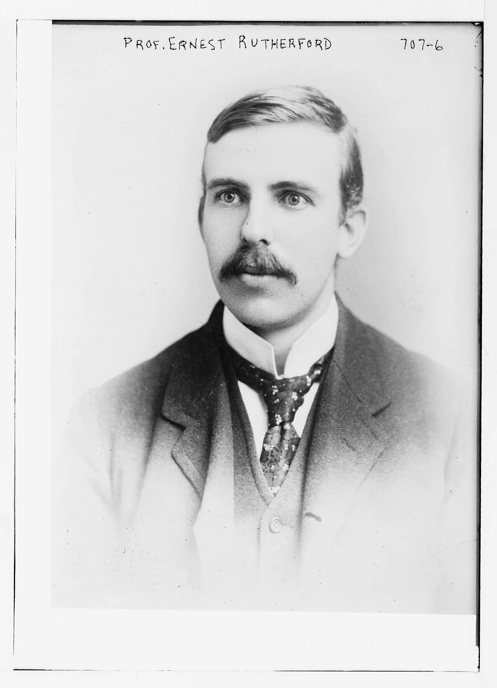
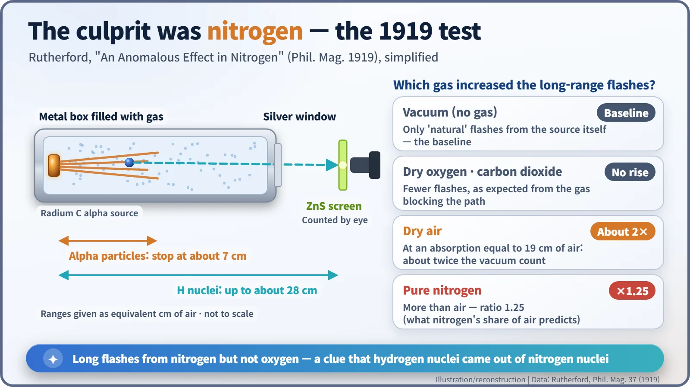
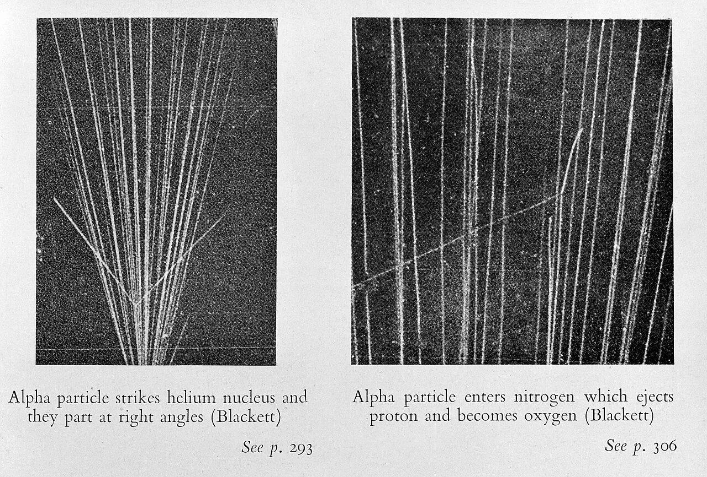
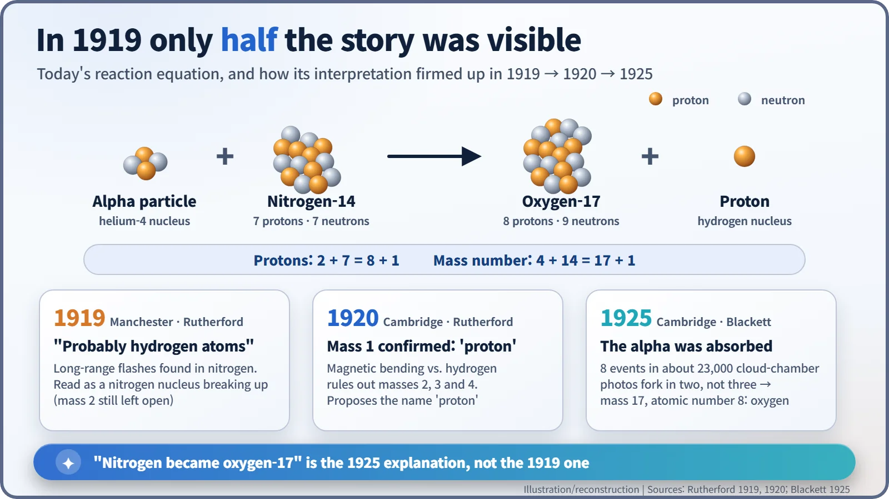

Nuclear History · 031
"Difficult to Avoid the Conclusion" — Rutherford's First Artificial Transmutation (1919)
Counting faint flashes in the dark, Rutherford found hydrogen nuclei coming out of nitrogen, but it took six more years to see that the nitrogen had become oxygen.
In 1919 Ernest Rutherford reported that alpha particles fired into nitrogen knocked out what were "probably" hydrogen nuclei: the first time people deliberately changed one element into another. But the full picture, nitrogen turning into oxygen-17, only became clear in 1925, when Patrick Blackett's cloud-chamber photographs showed the alpha particle being captured.
A very careful conclusion
"From the results so far obtained it is difficult to avoid the conclusion…" So begins the discussion section of a short paper in the British journal Philosophical Magazine in 1919. The conclusion it was so reluctant to avoid was this: when a fast alpha particle hits a nitrogen atom head-on, the nitrogen atom is "disintegrated", and a hydrogen atom that had been part of the nitrogen nucleus flies out. The author was Ernest Rutherford (1871–1937), the man who had discovered the atomic nucleus. The first experiment in which people deliberately changed one element into another entered the world wrapped in some of the most careful wording in physics. [1]

Science in the spare half-days of a war
During the First World War, Rutherford, then at the University of Manchester, spent much of his time on the Royal Navy's problem of detecting submarines. But he never quite left his own laboratory. In December 1917 he wrote to Niels Bohr in Copenhagen: "I am detecting & counting the lighter atoms set in motion by α particles & the results, I think, throw a good deal of light on the character & distribution of forces near the nucleus. I am also trying to break up the atom by this method." [4] [6]
The thread he was pulling had been left by his student Ernest Marsden. In 1914 Marsden had fired alpha particles into hydrogen gas and seen more fast hydrogen nuclei than he expected. Marsden then left for New Zealand, and Rutherford picked up the puzzle with his laboratory assistant, William Kay. [5]
There is also a story often told: Rutherford, late for an Allied anti-submarine meeting, is said to have explained that if he had really disintegrated the nucleus of the atom, that mattered more than the war. The wording and even the date differ from one telling to the next, so it should be read as an anecdote, not a quotation.
Counting sparks in the dark
The apparatus was modest. Inside a metal box sat a source coated with "radium C", which shoots out alpha particles. The box could be filled with different gases. At one end, behind a thin silver plate, was a screen painted with zinc sulphide, which gives off a tiny flash of light whenever a fast particle strikes it. Sitting in a darkened room, Rutherford and Kay watched the screen through a microscope and counted the flashes one by one.
Alpha particles from this source stop after about 7 cm of air. Yet some flashes came from particles that could travel through the equivalent of up to about 28 cm of air, just like hydrogen nuclei knocked forward in hydrogen gas. With dry oxygen or carbon dioxide in the box, these long-range flashes did not increase. With dry air, the count roughly doubled compared with an empty box. Dust and water vapour were ruled out. With pure nitrogen the count was 1.25 times that in air — exactly what you would expect if nitrogen, about four-fifths of the air, were responsible. The culprit was nitrogen. [1]

What Rutherford did not yet know in 1919
It is often said that "in 1919 Rutherford turned nitrogen into oxygen". The result is right, but it is not what Rutherford said. He wrote that the particles were "probably atoms of hydrogen, or atoms of mass 2", and he pictured the nitrogen nucleus being chipped apart, with a fragment knocked out. The idea that the alpha particle itself might be swallowed by the nucleus had not yet occurred to anyone. [1] [5]
By 1920 Rutherford had moved to Cambridge to head the Cavendish Laboratory. In his Bakerian Lecture to the Royal Society on 3 June 1920, he went a step further. By comparing how strongly a magnetic field bent the particles with the bending of ordinary hydrogen nuclei, he ruled out masses of 2, 3 or 4: "the long range particles liberated from nitrogen are atoms of hydrogen." The same year he proposed a name for the hydrogen nucleus: the proton. [2] [4]
The final piece came in 1925 from Patrick Blackett (1897–1974). Using a cloud chamber, which makes a particle's path visible as a trail of tiny droplets, he took about 23,000 photographs containing roughly 415,000 alpha-particle tracks (published estimates range from about 400,000 to 420,000). Among them he found just eight events. If the nitrogen nucleus had simply been chipped, each event should have shown three tracks leaving the collision point: the alpha particle, the proton and the recoiling nucleus. Blackett's photographs showed only two. The alpha particle had been captured, and only the proton flew off. As Blackett reasoned, the new nucleus "must have a mass 17" and an atomic number of 8: "It ought therefore to be an isotope of oxygen." [3] [4]

The same reaction in today's language
Today we write it as: nitrogen-14 + alpha particle → oxygen-17 + proton. The books balance. Protons: 7 + 2 = 8 + 1. Mass number: 14 + 4 = 17 + 1. This reaction does not release energy; it absorbs about 1.19 MeV, paid for out of the alpha particle's energy of motion. And it is rare, because the alpha particle has to push in close against the electric repulsion of the nitrogen nucleus.

Earlier, Rutherford and Frederick Soddy had shown that radioactive elements change into other elements on their own: natural transmutation. The 1919 experiment was different: people fired particles at a stable element, nitrogen, and changed it. That is why it counts as the first artificial transmutation. It is tempting to call it the alchemists' dream come true, but no gold was involved, and the number of atoms changed was so small that they had to be counted by eye.
"If projectiles of still greater energy were available"
Rutherford closed his paper with a forecast: "if α particles—or similar projectiles—of still greater energy were available for experiment, we might expect to break down the nucleus structure of many of the lighter atoms." In the early 1920s he and James Chadwick knocked protons out of several other light elements. In 1932 a machine that accelerated particles artificially transformed lithium nuclei, fulfilling the forecast. The idea of changing a nucleus by hitting it with a particle, a nuclear reaction, is the ancestor of everything that happens, moment by moment, inside a nuclear reactor. It began in a paper that was almost shy about its own conclusion. [1] [5]